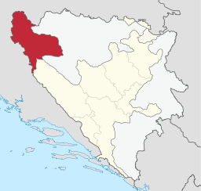

Pogledaj:
PocetnaGrad Bihac
Grad Cazin
Opcina Kljuc
Opcina Buzim
Sanski Most
Velika Kladusa
Bosanska Krupa
Bosanski Petrovac
Zapratite:
Pocetna stranica
Unsko-sanski kanton (skraćeno: USK) je jedan od deset kantona Federacije Bosne i Hercegovine, Bosna i Hercegovina.
Sastoji se od gradova Bihać i Cazin te još šest općina. Unsko-sanski kanton na sjeveru, zapadu i sjeveroistoku graniči sa Hrvatskom, na istoku i jugoistoku sa Republikom Srpskom te na jugozapadu sa Kantonom 10.
Ovo je grb Unsko Sanskog kantona.Ovo je zastava Unsko Sanskog kantona.
Glavni grad Unsko-Sanskog kantona je Bihać.
Površina: 4.125 km2
Broj stanovnistva u 2013. godini je iznosio: 299.343
 Karta USK